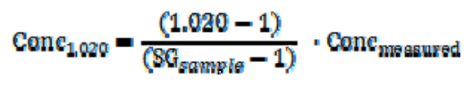
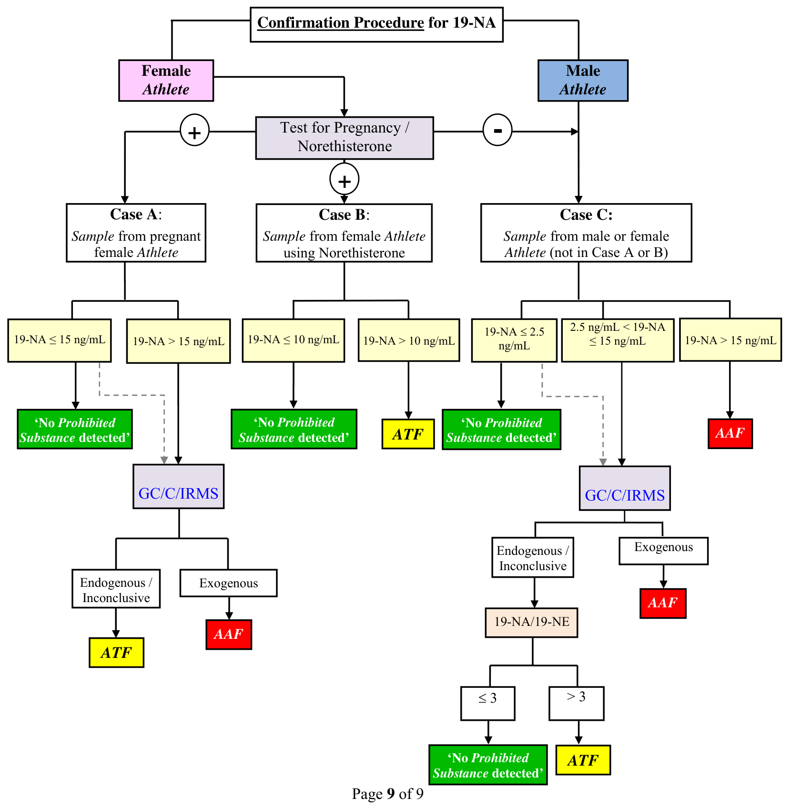

Technical Documents · TD2017NA
Edition v1.0, 2017 (version 1.0) · effective 1 September 2017 · superseded
Retrieved on 25 November 2026 from https://www.wada-ama.org/sites/default/files/resources/files/wada-td2017na-en_0.pdf
Editions: v1.1, 2027 (current) · v2.0, 2021 · v1.0, 2021 · v1.0, 2019 · v1.0, 2017 · v1.0, 2016 · v1.0, 2015 · v1.0, 2014 · v1.0, 2012 · v1.0, 2010 · v1.0, 2010 · v1.0, 2004
p. 1
HARMONIZATION OF ANALYSIS AND REPORTING OF 19-NORSTEROIDS RELATED TO NANDROLONE
1.0 Introduction
This document has been established to harmonize the Confirmation Procedure for the analysis and reporting of findings for 19-norsteroids related to nandrolone by Laboratories.
The detection of the Use of nandrolone (19-nortestosterone) and other 19-norsteroids (e.g. 19-norandrostenedione, 19-norandrostenediol) is based primarily upon the identification of the main urinary Metabolite, 19-norandrosterone (19-NA). More than one Metabolite of administered 19-norsteroids may be detected in urine Samples and reported [e.g. 19-noretiocholanolone (19-NE)]; however, the identification of 19-NA, including the demonstration, when required, that the 19-NA is not of endogenous origin¹ , is sufficient to report an Adverse Analytical Finding (AAF).
Under specific circumstances, as described below, additional Analytical Testing and reporting may be required.
2.0 Initial Testing Procedure
The initial test must detect the presence of 19-NA in urine Samples at levels greater than 1 ng/mL and also provide its estimated concentration when lower or equal to 15 ng/mL in order to guide the Confirmation Procedure. The Initial Testing Procedure shall include the following characteristics:
- A single calibration point at 15 ng/mL;
- An appropriate deuterated internal standard;
- The use of a negative and a positive quality control (QC) samples.
3.0 Confirmation Procedures
In addition to meeting the identification criteria described in the IDCR Technical Document [1], the Laboratory shall confirm the estimated concentration of 19-NA and/or perform GC/C/IRMS analysis to establish the origin (endogenous¹ or exogenous) of the 19-NA detected.
¹In the context of this Technical Document, "endogenous" origins of 19-NA include i) trace amounts normally present in males and females; ii) pregnancy; iii) in-situ microbial degradation of androsterone (A) to 19-NA; iv) consumption of the offal of intact, non-castrated pigs.
p. 2
3.1 Identification and Estimation of Concentration
The Confirmation Procedure to estimate the concentration of 19-NA in the Sample shall include the following characteristics:
- A single calibration point at 15 ng/mL, preferably with the 19-NA concentration based on or traceable to a Certified Reference Material;
- An appropriate deuterated internal standard (e.g. 19-NA-d₄-glucuronide);
- The use of a negative QC sample (at less than 2.5 ng/mL) and a positive QC sample (at greater than 15 ng/mL).
3.2 GC/C/IRMS Analysis
The GC/C/IRMS method to establish the origin of the 19-NA detected shall include the following characteristics (also refer to the TDIRMS [2] for general method characteristics):
- Each sequence of analysis by GC/C/IRMS shall include:
- a negative QC urine: δ¹³C values of 19-NA and endogenous reference compound (ERC) in a normal endogenous range (i.e. between -16‰ and - 26‰)² , with an absolute difference in δ¹³C values (∆δ) between ERC and 19-NA not greater than (≤)3‰; and
- a positive QC urine: δ¹³C value of ERC in a normal endogenous range (i.e. between -16‰ and -26‰), with an absolute ∆δ between ERC and 19-NA greater than 3‰.
These controls shall be subjected to the same sample preparation procedure as the Sample Aliquot.
- The GC/C/IRMS analysis shall include the confirmation of the 19-NA peak identity³ .
²Range of δ¹³C isotopic signatures around the world; the QC samples will reflect the geographical location of the Laboratory and do not have to cover the entire possible range of δ¹³C values.
³For example, confirmation by GC/MS analysis performed under comparable chromatographic conditions. The purpose is to produce a chromatogram with similar peak profiles so that the spectra can be used to identify the peak(s) of interest. Minor differences in retention time between the two techniques are expected.
p. 3
GC/C/IRMS analysis shall be performed in the following cases⁴ :
- Samples in which the concentration of 19-NA is estimated between 2.5 and 15 ng/mL⁵ , except in cases of pregnancy or in the presence of tetrahydronorethisterone;
- In cases of pregnancy, when the estimated 19-NA concentration is greater than 15 ng/mL⁵,⁶ .
Furthermore, GC/C/IRMS analysis may be performed on Samples containing 19-NA at estimated concentrations not greater than 2.5 ng/mL. In such cases, a positive GC/C/IRMS analysis showing the presence of 19-NA of exogenous origin is sufficient evidence to report an AAF.
Laboratories that do not have the analytical capacity to perform GC/C/IRMS analysis for 19-NA shall have Samples transferred to and analyzed by another Laboratory that has such analytical capacity.
Due to the occurrence of preparations of 19-norsteroids with a carbon isotopic signature (¹³C/¹²C) close to that of endogenous human urinary steroids (e.g. δ19-NA =-20 ‰ to -24 ‰), the result of the GC/C/IRMS analysis of the produced 19-NA may not readily indicate its exogenous origin in some populations of Athletes. Therefore, in Samples from males and non-pregnant females, when the estimated concentration of 19-NA is greater than 2.5 ng/mL and the result of the GC/C/IRMS analysis is negative (i.e. not consistent with an exogenous origin of 19-NA) or inconclusive, the Laboratory shall determine the ratio of 19-NA to 19-NE based on the relative signals from the GC/MS analysis⁷ . This ratio may serve as a possible
⁴To reject the hypothesis of endogenous or in-situ 19-NA formation the following criteria, based on the application of GC/C/IRMS analysis, shall be met simultaneously:
i- The absolute Δδ value between the endogenous reference compound (ERC) [e.g. A or pregnanediol (PD)] and 19-NA, i.e. |Δδ| = |δERC - δ19-NA| , is greater than 3 ‰, and
ii- The standard combined uncertainty (uc) associated with the determination of δ¹³C values, as estimated by the Laboratory during the GC/C/IRMS method validation, is not greater than 1.0 ‰ (uc_Max).
⁵After adjustment for the urine specific gravity (SG), if SG > 1.020, according to:

⁶In cases of pregnancy, when the estimated concentration of 19-NA in a urine Sample is between 2.5 and 15 ng/mL, the GC/C/IRMS analysis may also be performed to ascertain the endogenous origin of 19-NA.
⁷The response of 19-NA and 19-NE is assumed to be sufficiently similar.
p. 4
indicator of the administration of 19-norsteroids by excluding the in-situ formation of 19-NA [3].
3.3 Additional Tests
3.3.1 Test for Norethisterone and Pregnancy
19-NA is excreted during pregnancy and as a minor Metabolite of norethisterone [4], a progestogen agent of permitted use present in some oral contraceptives. Therefore, when the estimated concentration of 19-NA exceeds 2.5 ng/mL in the urine Sample of a female Athlete, the Laboratory shall perform:
- an analysis for the use of norethisterone-based contraceptives (e.g. detection of tetrahydronorethisterone), and if negative
- an analysis for pregnancy [e.g. based on the measurement of urinary human Chorionic Gonadotrophin (hCG)].
3.3.2 Test for demethylation
In addition, but rarely, 19-NA may be produced in urine Samples, in small concentrations, by in-situ 19-demethylation of androsterone (A) [5]. The reaction being more efficient with the 5β-isomer (i.e. 19-NE), such Samples show a lower than usual ratio of 19-NA to 19-NE (i.e. ≤ 3), which is also less than the ratio of their respective urinary precursors androsterone(A)/etiocholanolone(Etio)⁸ . This possible in-situ formation of 19-NA can be verified by GC/C/IRMS analysis [3, 6].
3.3 "B" Sample Confirmation Procedure
- In all cases, when the AAF for the "A" Sample is based on the results of a GC/C/IRMS analysis, the "B" Sample Confirmation Procedure also requires the GC/C/IRMS analysis (and identification of 19-NA);
- In all other cases, i.e. when the estimated concentration of 19-NA is shown to be greater than 15 ng/mL in a Sample collected from a male or a non-pregnant female Athlete, the "B" Sample Confirmation Procedure requires the identification of 19-NA only.
⁸In the absence of inhibitors of 5α-reductase (e.g. finasteride).
p. 5
4.0 Reporting
The Laboratory shall report 19-NA detected in a Sample from a male or a female Athlete as defined below:
A. Samples from pregnant female Athletes
No reference to the pregnancy status of an Athlete shall be reported in any case.
- Adverse Analytical Finding (AAF):
- Samples for which the results of the GC/C/IRMS analysis are consistent with the exogenous origin of 19-NA (see section 3.2above)⁴ .
[The estimated concentration of 19-NA⁹ and the results of the GC/C/IRMS analysis¹⁰ shall be included in the Test Report].
- Atypical Finding (ATF):
- Samples for which the estimated 19-NA concentration is greater than 15 ng/mL⁵ and the results of the mandatory GC/C/IRMS analysis are inconclusive or consistent with an endogenous origin of 19-NA (see section 3.2 above)⁴ .
[The estimated concentration of 19-NA⁹ and the results of the GC/C/IRMS analysis¹⁰ shall be included in the Test Report].
- "No Prohibited Substance or Method on the test menu was detected":
- No other Prohibited Substance or Prohibited Method has been confirmed in the Sample, and
- Samples for which the estimated 19-NA concentration is equal to or less than (≤) 15 ng/mL⁵ and the GC/C/IRMS analysis was either not performed or the results are inconclusive/consistent with an endogenous origin of 19-NA (section 3.2 above)⁴ .
⁹No strict quantification (and, therefore, no Measurement Uncertainty estimation) is required in the Confirmation Procedure for 19-NA. The application of a one-point calibrator at 15 ng/mL and appropriate QC samples is sufficient to confirm the estimated 19-NA concentration. The result shall be expressed as "≤ 15 ng/mL" or ">15 ng/mL", as applicable.
¹⁰The Test Report for the GC/C/IRMS analysis shall include a comment indicating whether or not the GC/C/IRMS finding is consistent with an exogenous origin of 19-NA, the δ¹³C values for 19-NA and ERC as well as the associated uc, expressed in ‰ units.
p. 6
B. Samples from female Athletes using norethisterone
- Atypical Finding (ATF):
- Samples for which the 19-NA concentration is estimated to be greater than 10 ng/mL⁵ .
[The estimated concentration of 19-NA⁹ shall be included in the Test Report. In addition, a comment shall be added describing the finding that demonstrates the use of norethisterone¹¹ (e.g. "19-norandrosterone (19-NA) was found in the Sample at an estimated concentration > 10 ng/mL. Tetrahydronorethisterone, a Metabolite of norethisterone, was also detected in the Sample)].
- "No Prohibited Substance or Method on the test menu was detected":
- No other Prohibited Substance or Prohibited Method has been confirmed in the Sample, and
- Samples for which the 19-NA concentration is equal to or less than (≤) 10 ng/mL⁵ .
[In this case, no reference to the use of norethisterone shall be included in the Test Report]
C. Samples from male or female Athletes (neither pregnant nor using norethisterone)
- Adverse Analytical Finding (AAF):
- Samples for which the estimated 19-NA concentration is greater than 15 ng/mL⁵ .
[The estimated concentration of 19-NA⁹ shall be included in the Test Report. In addition, for female Athletes, a comment shall be added explaining that pregnancy and the use of norethisterone were excluded (e.g. "the 19-NA finding is not consistent with pregnancy or the use of norethisterone");
- Samples for which the estimated 19-NA concentration is equal to or less than (≤) 15 ng/mL⁵ and the results of the GC/C/IRMS analysis are consistent with an exogenous origin of 19-NA (see section 3.2 above)⁴ .
[The estimated concentration of 19-NA⁹ and the results of the GC/C/IRMS analysis¹⁰ shall be included in the Test Report. In addition, for female Athletes, a comment shall be added explaining that the use of norethisterone was
¹¹Or of any other substance that is converted to norethisterone and further metabolized to tetrahydronorethisterone.
p. 7
excluded (e.g. "the 19-NA finding is not consistent with the use of norethisterone")].
- Atypical Finding (ATF):
- Samples for which the estimated 19-NA concentration is equal to or less than (≤) 15 ng/mL 5 and the results of the GC/C/IRMS analysis are inconclusive or consistent with an endogenous origin of 19-NA (see section 3.2 above)⁴ , and the ratio of 19-NA to 19-NE is greater than 3.
[The estimated concentration of 19-NA⁹ , the results of the GC/C/IRMS analysis¹⁰ and the ratio of 19-NA to 19-NE shall be included in the Test Report. A comment shall be added explaining that the results of the GC/C/IRMS analysis were inconclusive (e.g. due to the presence of interfering compound(s) or any other factor preventing a reliable GC/C/IRMS measurement) or consistent with an endogenous origin of 19-NA. In addition, for female Athletes, a comment shall be added explaining that pregnancy was excluded (e.g. "the 19-NA finding is not consistent with pregnancy")].
- "No Prohibited Substance or Method on the test menu was detected":
- No other Prohibited Substance or Prohibited Method has been confirmed in the Sample, and
- Samples for which the estimated 19-NA concentration is equal to or less than (≤)2.5 ng/mL⁵ (and too low to perform GC/C/IRMS analysis);
- Samples for which the estimated 19-NA concentration is greater than 2.5 ng/mL but not exceeding 15 ng/mL⁵ , and the ratio of 19-NA to 19-NE is not greater than (≤)3, and the results of the GC/C/IRMS analysis are consistent with an endogenous origin (i.e. in-situ formation) of 19-NA (see section 3.2 above)⁴ .
p. 8
5.0 References
- WADA Technical Document TDIDCR: Minimum Criteria for Chromatographic-Mass Spectrometric Confirmation of the Identity of Analytes for Doping Control Purposes.
https://www.wada-ama.org/en/what-we-do/science-medical/laboratories
-
WADA Technical Document TDIRMS: Detection of synthetic forms of Endogenous Anabolic Androgenic Steroids by GC/C/IRMS. https://www.wada-ama.org/en/what-we-do/science-medical/laboratories
-
Guay C, Goudreault D, Schänzer W, Flenker U, Ayotte C. Excretion of norsteroids' phase II metabolites of different origin in human. Steroids 2009; 74: 350-8.
-
Walker CJ, Cowan DA, James VHT, Lau JCY, Kicman AT. Doping in sport-1. Excretion of 19-norandrosterone by healthy women, including those using contraceptives containing norethisterone. Steroids 2009; 74: 329-35.
-
Grosse J, Anielski P, Hemmersbach P, Lund H, Mueller RK, Rautenberg C, Thieme D. Formation of 19-norsteroids by in situ demethylations of endogenous steroids in stored urine samples. Steroids 2005; 70: 499-506.
-
Hebestreit M, Flenker U, Fusshöller G, Geyer H, Güntner U, Mareck U, Piper T, Thevis M, Ayotte C, Schänzer W. Determination of the origin of urinary norandrosterone traces by gas chromatography combustion isotope ratio mass spectrometry. Analyst 2006; 131:1021-6.
p. 9
Annex A - Flowchart for 19-NA findings

Retrieved on 25 November 2026 from https://www.wada-ama.org/sites/default/files/resources/files/wada-td2017na-en_0.pdf